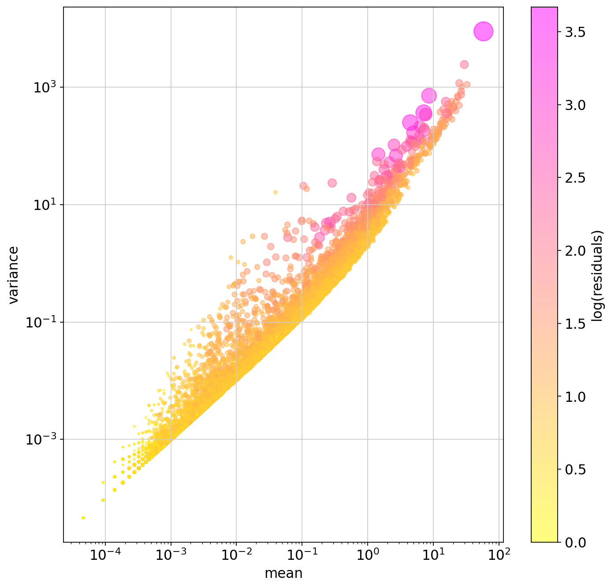
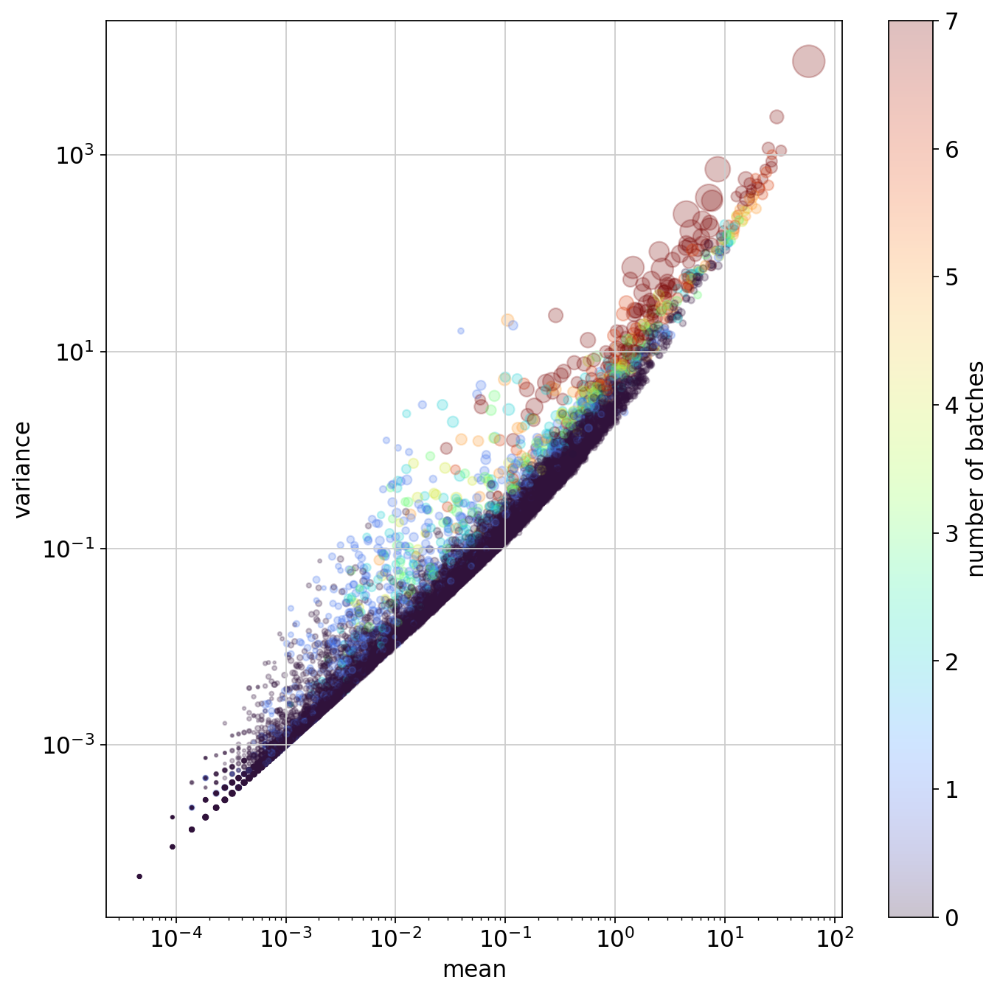
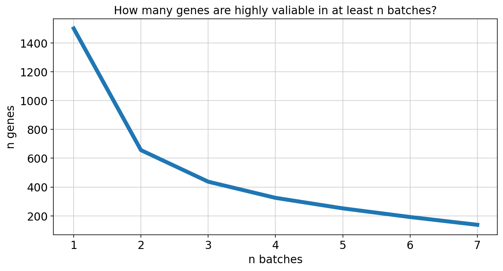
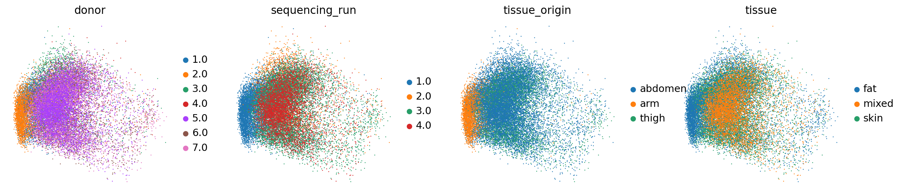
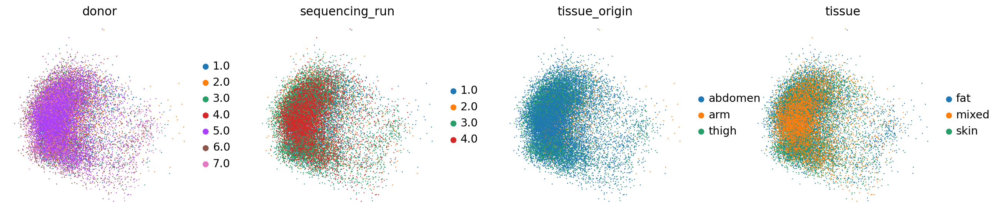
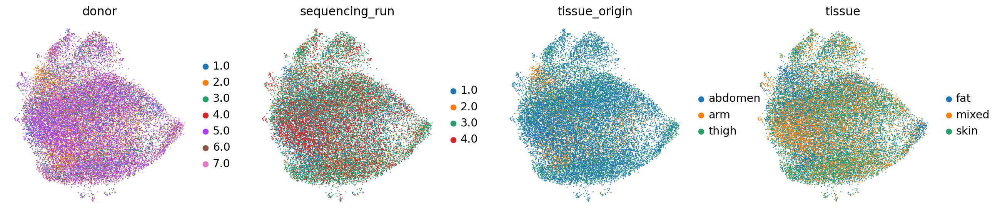
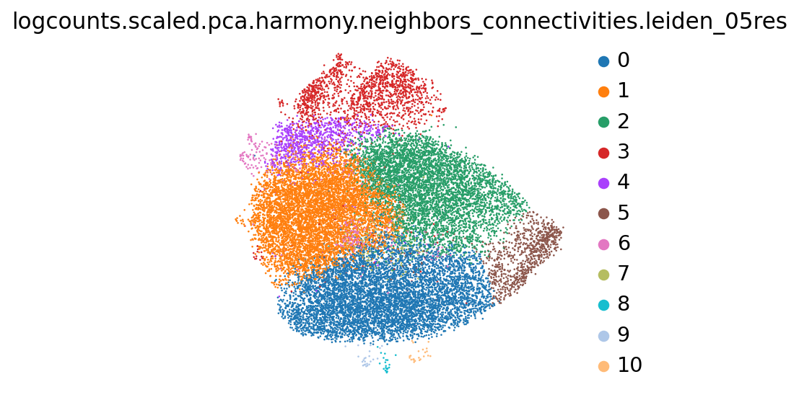
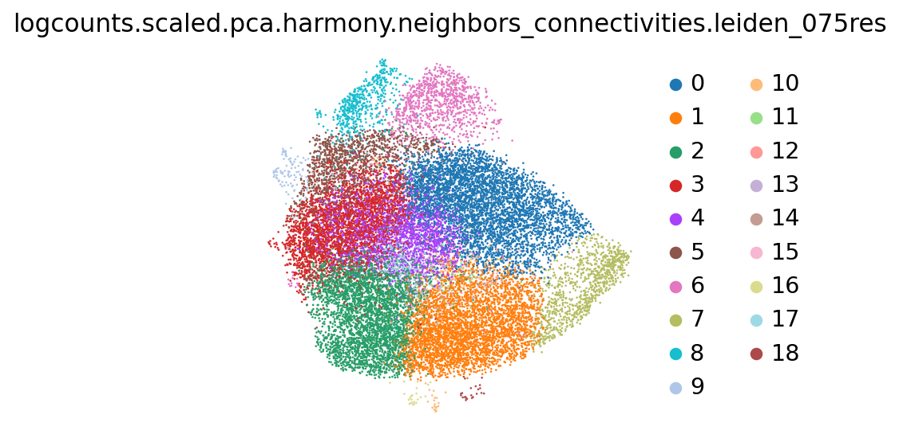

import scanpy as sc
import numpy as np
import pandas as pd
from matplotlib import pyplot as plt
sc.settings.set_figure_params(
dpi=80,
facecolor="white",
frameon=False,
)adata = sc.read_h5ad("../output/0.2-sce-after-contamination-removal.h5ad") # read adata
adata.obs = adata.obs[['Sample', 'Barcode', 'donor', 'tissue', 'tissue_origin', 'sequencing_run', 'sex']].astype(str) # take just the useful info
sc.pp.calculate_qc_metrics(adata, inplace=True) # 'n_genes_by_counts', 'log1p_n_genes_by_counts', 'total_counts', 'log1p_total_counts', etc...
adata.obs.loc[adata.obs.donor=="5.0", "sex"] = "M"
adata.obs.loc[adata.obs.donor=="7.0", "sex"] = "F"
adataAnnData object with n_obs × n_vars = 21588 × 18627
obs: 'Sample', 'Barcode', 'donor', 'tissue', 'tissue_origin', 'sequencing_run', 'sex', 'n_genes_by_counts', 'log1p_n_genes_by_counts', 'total_counts', 'log1p_total_counts', 'pct_counts_in_top_50_genes', 'pct_counts_in_top_100_genes', 'pct_counts_in_top_200_genes', 'pct_counts_in_top_500_genes'
var: 'ID', 'Symbol', 'Type', 'n_cells_by_counts', 'mean_counts', 'log1p_mean_counts', 'pct_dropout_by_counts', 'total_counts', 'log1p_total_counts'
uns: 'X_name'
layers: 'logcounts'# cells stratification
adata.obs.groupby(["sequencing_run", "donor", "tissue_origin", "tissue"])[["Barcode"]].count().replace(0, np.nan).dropna().astype(int).to_csv("../output/1.0-cells_after_filtering.csv")
adata.obs.groupby(["sequencing_run", "donor", "tissue_origin", "tissue"])[["Barcode"]].count().replace(0, np.nan).dropna().astype(int)| Barcode | ||||
|---|---|---|---|---|
| sequencing_run | donor | tissue_origin | tissue | |
| 1.0 | 1.0 | abdomen | fat | 158 |
| skin | 3784 | |||
| 2.0 | arm | fat | 2794 | |
| 2.0 | 3.0 | abdomen | fat | 724 |
| skin | 540 | |||
| 4.0 | abdomen | fat | 49 | |
| skin | 584 | |||
| 3.0 | 6.0 | abdomen | fat | 1974 |
| skin | 1692 | |||
| 7.0 | thigh | fat | 1680 | |
| skin | 2847 | |||
| 4.0 | 5.0 | abdomen | mixed | 4762 |
# standardize logcounts
adata.layers["logcounts.scaled"] = sc.pp.scale(adata, zero_center=True, max_value=None, copy=True, layer="logcounts").layers["logcounts"]# select the HVGs using pearson method
pearson_hvgs = sc.experimental.pp.highly_variable_genes(adata, inplace=False, batch_key="donor", layer=None, flavor="pearson_residuals", n_top_genes=500)
pearson_hvgs| means | variances | residual_variances | highly_variable_rank | highly_variable_nbatches | highly_variable_intersection | highly_variable | |
|---|---|---|---|---|---|---|---|
| ENSG00000187634.SAMD11 | 0.000973 | 0.000972 | 0.908626 | NaN | 0 | False | False |
| ENSG00000188976.NOC2L | 0.042709 | 0.049040 | 1.066757 | NaN | 0 | False | False |
| ENSG00000187961.KLHL17 | 0.005420 | 0.006224 | 1.313732 | NaN | 0 | False | False |
| ENSG00000187583.PLEKHN1 | 0.001019 | 0.001018 | 0.832943 | NaN | 0 | False | False |
| ENSG00000187642.PERM1 | 0.000232 | 0.000510 | 0.522404 | NaN | 0 | False | False |
| ... | ... | ... | ... | ... | ... | ... | ... |
| ENSG00000271254.ENSG00000271254 | 0.011349 | 0.013074 | 1.100826 | NaN | 0 | False | False |
| ENSG00000276345.ENSG00000276345 | 0.025246 | 0.029983 | 0.637354 | NaN | 0 | False | False |
| ENSG00000276017.ENSG00000276017 | 0.000046 | 0.000046 | 0.083079 | NaN | 0 | False | False |
| ENSG00000278817.ENSG00000278817 | 0.008894 | 0.009093 | 1.044582 | NaN | 0 | False | False |
| ENSG00000277196.ENSG00000277196 | 0.000139 | 0.000139 | 0.427159 | NaN | 0 | False | False |
18627 rows × 7 columns
plt.figure(figsize=(10,10))
plt.colorbar(plt.scatter(
pearson_hvgs.means, pearson_hvgs.variances,
alpha=.5, s=pearson_hvgs.residual_variances*10, c=np.log1p(pearson_hvgs.residual_variances),
cmap="spring_r"
), label="log(residuals)")
plt.xscale("log")
plt.yscale("log")
plt.xlabel("mean")
plt.ylabel("variance")
plt.show()
plt.figure(figsize=(10,10))
plt.colorbar(plt.scatter(
pearson_hvgs.means, pearson_hvgs.variances,
alpha=.25, s=pearson_hvgs.residual_variances*10, c=pearson_hvgs.highly_variable_nbatches,
cmap="turbo"
), label="number of batches")
plt.xscale("log")
plt.yscale("log")
plt.xlabel("mean")
plt.ylabel("variance")
plt.show()
plt.figure(figsize=(10,5))
plt.title("How many genes are highly valiable in at least n batches?")
plt.plot(
np.arange(adata.obs.donor.nunique())+1,
(pearson_hvgs[["highly_variable_nbatches"]].values > np.arange(adata.obs.donor.nunique())[None,:]).sum(axis=0),
linewidth=5
)
plt.ylabel("n genes")
plt.xlabel("n batches")
plt.show()
# reading the LECs population and subpopulation markers
markers = pd.read_csv("../markers.csv", header=None)
markers.columns = ["gene_ID", "population", "population_ID", "positive", "known"]
markers = markers.loc[markers.population.str.match(".*LEC.*")]
markers["positive"] = markers.positive=="positive"
markers| gene_ID | population | population_ID | positive | known | |
|---|---|---|---|---|---|
| 0 | ENSG00000117707.PROX1 | LECs | LEC | True | yes |
| 1 | ENSG00000162493.PDPN | LECs | LEC | True | yes |
| 2 | ENSG00000133800.LYVE1 | capillary-LEC | cpLEC | True | yes |
| 3 | ENSG00000137077.CCL21 | capillary-LEC | cpLEC | True | yes |
| 4 | ENSG00000189056.RELN | capillary-LEC | cpLEC | True | yes |
| 5 | ENSG00000129048.ACKR4 | capillary-LEC | cpLEC | False | yes |
| 6 | ENSG00000108691.CCL2 | capillary-LEC | cpLEC | False | no |
| 7 | ENSG00000081041.CXCL2 | capillary-LEC | cpLEC | False | no |
| 8 | ENSG00000133800.LYVE1 | precollector-LEC | pcLEC | True | yes |
| 9 | ENSG00000137077.CCL21 | precollector-LEC | pcLEC | True | yes |
| 10 | ENSG00000189056.RELN | precollector-LEC | pcLEC | True | yes |
| 11 | ENSG00000129048.ACKR4 | precollector-LEC | pcLEC | False | yes |
| 12 | ENSG00000108691.CCL2 | precollector-LEC | pcLEC | True | no |
| 13 | ENSG00000081041.CXCL2 | precollector-LEC | pcLEC | True | no |
| 14 | ENSG00000133800.LYVE1 | collector-LEC | clLEC | False | yes |
| 15 | ENSG00000137077.CCL21 | collector-LEC | clLEC | False | yes |
| 16 | ENSG00000189056.RELN | collector-LEC | clLEC | False | yes |
| 17 | ENSG00000129048.ACKR4 | collector-LEC | clLEC | True | yes |
| 18 | ENSG00000108691.CCL2 | collector-LEC | clLEC | True | no |
| 19 | ENSG00000081041.CXCL2 | collector-LEC | clLEC | True | no |
| 20 | ENSG00000137077.CCL21 | valve-LEC | vLEC | False | yes |
| 21 | ENSG00000133800.LYVE1 | valve-LEC | vLEC | False | yes |
| 22 | ENSG00000013297.CLDN11 | valve-LEC | vLEC | True | yes |
| 23 | ENSG00000272398.CD24 | valve-LEC | vLEC | True | no |
| 24 | ENSG00000149564.ESAM | valve-LEC | vLEC | True | no |
| 25 | ENSG00000170017.ALCAM | valve-LEC | vLEC | True | no |
| 34 | ENSG00000090339.ICAM1 | LECs | LEC | True | ? |
| 35 | ENSG00000103335.PIEZO1 | LECs | LEC | True | ? |
| 36 | ENSG00000154864.PIEZO2 | LECs | LEC | True | ? |
# selecting genes highly variable in at least 2 batches and markers
# (markers are not HVG, but we need them)
selected_hvgs = pearson_hvgs[pearson_hvgs.highly_variable_nbatches>=2].index.union(markers.gene_ID)
selected_hvgsIndex(['ENSG00000003436.TFPI', 'ENSG00000004799.PDK4', 'ENSG00000005483.KMT2E',
'ENSG00000007908.SELE', 'ENSG00000008083.JARID2',
'ENSG00000008294.SPAG9', 'ENSG00000008405.CRY1', 'ENSG00000008517.IL32',
'ENSG00000008988.RPS20', 'ENSG00000009413.REV3L',
...
'ENSG00000244694.PTCHD4', 'ENSG00000257987.TEX49',
'ENSG00000265972.TXNIP', 'ENSG00000266964.FXYD1',
'ENSG00000271503.CCL5', 'ENSG00000272398.CD24', 'ENSG00000276644.DACH1',
'ENSG00000284491.THSD8', 'ENSG00000288602.C8orf44-SGK3',
'ENSG00000291237.SOD2'],
dtype='object', length=675)adata.var["selected"] = adata.var.index.isin(selected_hvgs)
adata.var| ID | Symbol | Type | n_cells_by_counts | mean_counts | log1p_mean_counts | pct_dropout_by_counts | total_counts | log1p_total_counts | selected | |
|---|---|---|---|---|---|---|---|---|---|---|
| ENSG00000187634.SAMD11 | ENSG00000187634 | SAMD11 | Gene Expression | 21 | 0.000973 | 0.000972 | 99.902724 | 21.0 | 3.091042 | False |
| ENSG00000188976.NOC2L | ENSG00000188976 | NOC2L | Gene Expression | 850 | 0.042709 | 0.041822 | 96.062627 | 922.0 | 6.827629 | False |
| ENSG00000187961.KLHL17 | ENSG00000187961 | KLHL17 | Gene Expression | 108 | 0.005420 | 0.005405 | 99.499722 | 117.0 | 4.770685 | False |
| ENSG00000187583.PLEKHN1 | ENSG00000187583 | PLEKHN1 | Gene Expression | 22 | 0.001019 | 0.001019 | 99.898092 | 22.0 | 3.135494 | False |
| ENSG00000187642.PERM1 | ENSG00000187642 | PERM1 | Gene Expression | 3 | 0.000232 | 0.000232 | 99.986103 | 5.0 | 1.791759 | False |
| ... | ... | ... | ... | ... | ... | ... | ... | ... | ... | ... |
| ENSG00000271254.ENSG00000271254 | ENSG00000271254 | ENSG00000271254 | Gene Expression | 226 | 0.011349 | 0.011285 | 98.953122 | 245.0 | 5.505332 | False |
| ENSG00000276345.ENSG00000276345 | ENSG00000276345 | ENSG00000276345 | Gene Expression | 491 | 0.025246 | 0.024932 | 97.725588 | 545.0 | 6.302619 | False |
| ENSG00000276017.ENSG00000276017 | ENSG00000276017 | ENSG00000276017 | Gene Expression | 1 | 0.000046 | 0.000046 | 99.995368 | 1.0 | 0.693147 | False |
| ENSG00000278817.ENSG00000278817 | ENSG00000278817 | ENSG00000278817 | Gene Expression | 189 | 0.008894 | 0.008855 | 99.124514 | 192.0 | 5.262690 | False |
| ENSG00000277196.ENSG00000277196 | ENSG00000277196 | ENSG00000277196 | Gene Expression | 3 | 0.000139 | 0.000139 | 99.986103 | 3.0 | 1.386294 | False |
18627 rows × 10 columns
# now working just on the HVGs
adata_hvgs = adata[:,adata.var.selected].copy()
sc.pp.calculate_qc_metrics(adata_hvgs, inplace=True)
adata_hvgsAnnData object with n_obs × n_vars = 21588 × 661
obs: 'Sample', 'Barcode', 'donor', 'tissue', 'tissue_origin', 'sequencing_run', 'sex', 'n_genes_by_counts', 'log1p_n_genes_by_counts', 'total_counts', 'log1p_total_counts', 'pct_counts_in_top_50_genes', 'pct_counts_in_top_100_genes', 'pct_counts_in_top_200_genes', 'pct_counts_in_top_500_genes'
var: 'ID', 'Symbol', 'Type', 'n_cells_by_counts', 'mean_counts', 'log1p_mean_counts', 'pct_dropout_by_counts', 'total_counts', 'log1p_total_counts', 'selected'
uns: 'X_name'
layers: 'logcounts', 'logcounts.scaled'# compute PCA, neighbors and UMAP just on HVGs
adata_hvgs.obsm["logcounts.scaled.pca"] = sc.pp.pca(adata_hvgs.layers["logcounts.scaled"], svd_solver="arpack", n_comps=100)
adata_hvgsAnnData object with n_obs × n_vars = 21588 × 661
obs: 'Sample', 'Barcode', 'donor', 'tissue', 'tissue_origin', 'sequencing_run', 'sex', 'n_genes_by_counts', 'log1p_n_genes_by_counts', 'total_counts', 'log1p_total_counts', 'pct_counts_in_top_50_genes', 'pct_counts_in_top_100_genes', 'pct_counts_in_top_200_genes', 'pct_counts_in_top_500_genes'
var: 'ID', 'Symbol', 'Type', 'n_cells_by_counts', 'mean_counts', 'log1p_mean_counts', 'pct_dropout_by_counts', 'total_counts', 'log1p_total_counts', 'selected'
uns: 'X_name'
obsm: 'logcounts.scaled.pca'
layers: 'logcounts', 'logcounts.scaled'# 2 PCs
sc.pl.embedding(adata_hvgs, basis="logcounts.scaled.pca", color=["donor", "sequencing_run", "tissue_origin", "tissue"])/anaconda3/envs/scampi/lib/python3.10/site-packages/scanpy/plotting/_tools/scatterplots.py:394: UserWarning: No data for colormapping provided via 'c'. Parameters 'cmap' will be ignored
cax = scatter(
/anaconda3/envs/scampi/lib/python3.10/site-packages/scanpy/plotting/_tools/scatterplots.py:394: UserWarning: No data for colormapping provided via 'c'. Parameters 'cmap' will be ignored
cax = scatter(
/anaconda3/envs/scampi/lib/python3.10/site-packages/scanpy/plotting/_tools/scatterplots.py:394: UserWarning: No data for colormapping provided via 'c'. Parameters 'cmap' will be ignored
cax = scatter(
/anaconda3/envs/scampi/lib/python3.10/site-packages/scanpy/plotting/_tools/scatterplots.py:394: UserWarning: No data for colormapping provided via 'c'. Parameters 'cmap' will be ignored
cax = scatter(
# harmony integration
sc.external.pp.harmony_integrate(
adata_hvgs, basis="logcounts.scaled.pca", key="donor",
adjusted_basis="logcounts.scaled.pca.harmony", sigma=1. #hyperparameters: sigma.
)
adata_hvgs2023-11-27 11:46:08,399 - harmonypy - INFO - Computing initial centroids with sklearn.KMeans...
2023-11-27 11:46:15,279 - harmonypy - INFO - sklearn.KMeans initialization complete.
2023-11-27 11:46:15,341 - harmonypy - INFO - Iteration 1 of 10
2023-11-27 11:46:17,578 - harmonypy - INFO - Iteration 2 of 10
2023-11-27 11:46:19,135 - harmonypy - INFO - Converged after 2 iterationsAnnData object with n_obs × n_vars = 21588 × 661
obs: 'Sample', 'Barcode', 'donor', 'tissue', 'tissue_origin', 'sequencing_run', 'sex', 'n_genes_by_counts', 'log1p_n_genes_by_counts', 'total_counts', 'log1p_total_counts', 'pct_counts_in_top_50_genes', 'pct_counts_in_top_100_genes', 'pct_counts_in_top_200_genes', 'pct_counts_in_top_500_genes'
var: 'ID', 'Symbol', 'Type', 'n_cells_by_counts', 'mean_counts', 'log1p_mean_counts', 'pct_dropout_by_counts', 'total_counts', 'log1p_total_counts', 'selected'
uns: 'X_name', 'donor_colors', 'sequencing_run_colors', 'tissue_origin_colors', 'tissue_colors'
obsm: 'logcounts.scaled.pca', 'logcounts.scaled.pca.harmony'
layers: 'logcounts', 'logcounts.scaled'sc.pp.neighbors(adata_hvgs, use_rep="logcounts.scaled.pca.harmony", n_pcs=100, n_neighbors=40, key_added="logcounts.scaled.pca.harmony.neighbors")
adata_hvgs.obsm["logcounts.scaled.pca.harmony.neighbors.umap"] = sc.tl.umap(adata_hvgs, neighbors_key="logcounts.scaled.pca.harmony.neighbors", copy=True).obsm["X_umap"]/anaconda3/envs/scampi/lib/python3.10/site-packages/umap/distances.py:1063: NumbaDeprecationWarning: The 'nopython' keyword argument was not supplied to the 'numba.jit' decorator. The implicit default value for this argument is currently False, but it will be changed to True in Numba 0.59.0. See https://numba.readthedocs.io/en/stable/reference/deprecation.html#deprecation-of-object-mode-fall-back-behaviour-when-using-jit for details.
@numba.jit()
/anaconda3/envs/scampi/lib/python3.10/site-packages/umap/distances.py:1071: NumbaDeprecationWarning: The 'nopython' keyword argument was not supplied to the 'numba.jit' decorator. The implicit default value for this argument is currently False, but it will be changed to True in Numba 0.59.0. See https://numba.readthedocs.io/en/stable/reference/deprecation.html#deprecation-of-object-mode-fall-back-behaviour-when-using-jit for details.
@numba.jit()
/anaconda3/envs/scampi/lib/python3.10/site-packages/umap/distances.py:1086: NumbaDeprecationWarning: The 'nopython' keyword argument was not supplied to the 'numba.jit' decorator. The implicit default value for this argument is currently False, but it will be changed to True in Numba 0.59.0. See https://numba.readthedocs.io/en/stable/reference/deprecation.html#deprecation-of-object-mode-fall-back-behaviour-when-using-jit for details.
@numba.jit()
/anaconda3/envs/scampi/lib/python3.10/site-packages/umap/umap_.py:660: NumbaDeprecationWarning: The 'nopython' keyword argument was not supplied to the 'numba.jit' decorator. The implicit default value for this argument is currently False, but it will be changed to True in Numba 0.59.0. See https://numba.readthedocs.io/en/stable/reference/deprecation.html#deprecation-of-object-mode-fall-back-behaviour-when-using-jit for details.
@numba.jit()sc.pl.embedding(adata_hvgs, basis="logcounts.scaled.pca.harmony", color=["donor", "sequencing_run", "tissue_origin", "tissue"])
sc.pl.embedding(adata_hvgs, basis="logcounts.scaled.pca.harmony.neighbors.umap", color=["donor", "sequencing_run", "tissue_origin", "tissue"])/anaconda3/envs/scampi/lib/python3.10/site-packages/scanpy/plotting/_tools/scatterplots.py:394: UserWarning: No data for colormapping provided via 'c'. Parameters 'cmap' will be ignored
cax = scatter(
/anaconda3/envs/scampi/lib/python3.10/site-packages/scanpy/plotting/_tools/scatterplots.py:394: UserWarning: No data for colormapping provided via 'c'. Parameters 'cmap' will be ignored
cax = scatter(
/anaconda3/envs/scampi/lib/python3.10/site-packages/scanpy/plotting/_tools/scatterplots.py:394: UserWarning: No data for colormapping provided via 'c'. Parameters 'cmap' will be ignored
cax = scatter(
/anaconda3/envs/scampi/lib/python3.10/site-packages/scanpy/plotting/_tools/scatterplots.py:394: UserWarning: No data for colormapping provided via 'c'. Parameters 'cmap' will be ignored
cax = scatter(
/anaconda3/envs/scampi/lib/python3.10/site-packages/scanpy/plotting/_tools/scatterplots.py:394: UserWarning: No data for colormapping provided via 'c'. Parameters 'cmap' will be ignored
cax = scatter(
/anaconda3/envs/scampi/lib/python3.10/site-packages/scanpy/plotting/_tools/scatterplots.py:394: UserWarning: No data for colormapping provided via 'c'. Parameters 'cmap' will be ignored
cax = scatter(
/anaconda3/envs/scampi/lib/python3.10/site-packages/scanpy/plotting/_tools/scatterplots.py:394: UserWarning: No data for colormapping provided via 'c'. Parameters 'cmap' will be ignored
cax = scatter(
/anaconda3/envs/scampi/lib/python3.10/site-packages/scanpy/plotting/_tools/scatterplots.py:394: UserWarning: No data for colormapping provided via 'c'. Parameters 'cmap' will be ignored
cax = scatter(

# laiden clustering at different resolutions on the harmony integration layer
sc.tl.leiden(adata_hvgs, obsp="logcounts.scaled.pca.harmony.neighbors_connectivities", resolution=.5, key_added="logcounts.scaled.pca.harmony.neighbors_connectivities.leiden_05res")
sc.tl.leiden(adata_hvgs, obsp="logcounts.scaled.pca.harmony.neighbors_connectivities", resolution=.75, key_added="logcounts.scaled.pca.harmony.neighbors_connectivities.leiden_075res")
adata_hvgs.obs| Sample | Barcode | donor | tissue | tissue_origin | sequencing_run | sex | n_genes_by_counts | log1p_n_genes_by_counts | total_counts | log1p_total_counts | pct_counts_in_top_50_genes | pct_counts_in_top_100_genes | pct_counts_in_top_200_genes | pct_counts_in_top_500_genes | logcounts.scaled.pca.harmony.neighbors_connectivities.leiden_05res | logcounts.scaled.pca.harmony.neighbors_connectivities.leiden_075res | |
|---|---|---|---|---|---|---|---|---|---|---|---|---|---|---|---|---|---|
| donor1_fat.AAAGAACCACATACGT-1 | donor1_fat | AAAGAACCACATACGT-1 | 1.0 | fat | abdomen | 1.0 | F | 252 | 5.533389 | 1317.0 | 7.183871 | 61.655277 | 81.624905 | 96.051632 | 100.0 | 0 | 1 |
| donor1_fat.AAAGGTAGTCCGGTCA-1 | donor1_fat | AAAGGTAGTCCGGTCA-1 | 1.0 | fat | abdomen | 1.0 | F | 139 | 4.941642 | 1479.0 | 7.299797 | 80.459770 | 97.363083 | 100.000000 | 100.0 | 0 | 2 |
| donor1_fat.AAAGGTATCTCTCTTC-1 | donor1_fat | AAAGGTATCTCTCTTC-1 | 1.0 | fat | abdomen | 1.0 | F | 196 | 5.283204 | 1806.0 | 7.499423 | 72.369878 | 91.251384 | 100.000000 | 100.0 | 1 | 3 |
| donor1_fat.AACCACACAGTGGCTC-1 | donor1_fat | AACCACACAGTGGCTC-1 | 1.0 | fat | abdomen | 1.0 | F | 254 | 5.541264 | 3110.0 | 8.042699 | 66.495177 | 88.938907 | 98.263666 | 100.0 | 0 | 1 |
| donor1_fat.AACGGGATCTGCTGAA-1 | donor1_fat | AACGGGATCTGCTGAA-1 | 1.0 | fat | abdomen | 1.0 | F | 171 | 5.147494 | 1448.0 | 7.278629 | 73.273481 | 93.784530 | 100.000000 | 100.0 | 0 | 2 |
| ... | ... | ... | ... | ... | ... | ... | ... | ... | ... | ... | ... | ... | ... | ... | ... | ... | ... |
| donor5_recovery.TTTGGTTTCGACCAAT-1 | donor5_recovery | TTTGGTTTCGACCAAT-1 | 5.0 | mixed | abdomen | 4.0 | M | 163 | 5.099866 | 618.0 | 6.428105 | 67.475728 | 89.320388 | 100.000000 | 100.0 | 1 | 3 |
| donor5_recovery.TTTGTTGGTCCTACGG-1 | donor5_recovery | TTTGTTGGTCCTACGG-1 | 5.0 | mixed | abdomen | 4.0 | M | 143 | 4.969813 | 305.0 | 5.723585 | 63.934426 | 85.901639 | 100.000000 | 100.0 | 0 | 2 |
| donor5_recovery.TTTGTTGGTCGCAGTC-1 | donor5_recovery | TTTGTTGGTCGCAGTC-1 | 5.0 | mixed | abdomen | 4.0 | M | 207 | 5.337538 | 471.0 | 6.156979 | 53.715499 | 76.433121 | 98.513800 | 100.0 | 5 | 7 |
| donor5_recovery.TTTGTTGGTGGCGTAA-1 | donor5_recovery | TTTGTTGGTGGCGTAA-1 | 5.0 | mixed | abdomen | 4.0 | M | 142 | 4.962845 | 813.0 | 6.701960 | 77.121771 | 94.833948 | 100.000000 | 100.0 | 3 | 8 |
| donor5_recovery.TTTGTTGTCGGCATTA-1 | donor5_recovery | TTTGTTGTCGGCATTA-1 | 5.0 | mixed | abdomen | 4.0 | M | 216 | 5.379897 | 763.0 | 6.638568 | 57.798165 | 80.471822 | 97.903014 | 100.0 | 3 | 6 |
21588 rows × 17 columns
# number of clusters for each resolution
adata_hvgs.obs.loc[:,adata_hvgs.obs.columns.str.match("logcounts\.scaled\.pca\.harmony\.neighbors_connectivities\.leiden_[0-9]+res$")].nunique()logcounts.scaled.pca.harmony.neighbors_connectivities.leiden_05res 11
logcounts.scaled.pca.harmony.neighbors_connectivities.leiden_075res 19
dtype: int64sc.pl.embedding(adata_hvgs, basis="logcounts.scaled.pca.harmony.neighbors.umap", color="logcounts.scaled.pca.harmony.neighbors_connectivities.leiden_05res")/anaconda3/envs/scampi/lib/python3.10/site-packages/scanpy/plotting/_tools/scatterplots.py:394: UserWarning: No data for colormapping provided via 'c'. Parameters 'cmap' will be ignored
cax = scatter(
sc.pl.embedding(adata_hvgs, basis="logcounts.scaled.pca.harmony.neighbors.umap", color="logcounts.scaled.pca.harmony.neighbors_connectivities.leiden_075res")/anaconda3/envs/scampi/lib/python3.10/site-packages/scanpy/plotting/_tools/scatterplots.py:394: UserWarning: No data for colormapping provided via 'c'. Parameters 'cmap' will be ignored
cax = scatter(
#save the adata object
adata_hvgs.write_h5ad("../output/1.1-sce-after-contamination-removal-integration-clustering.h5ad")